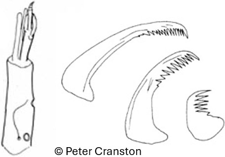
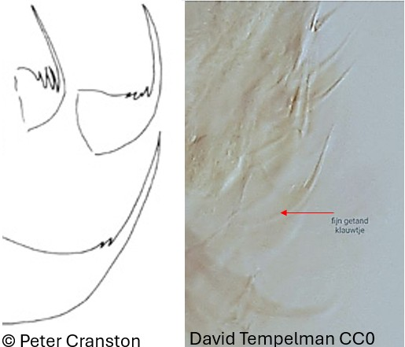

S.F. Orthocladiinae, genre Nanocladius
Dents centrales et latérales bien visibles, plaques ventromentales en position diagonale


Griffes des parapodes antérieurs fortement dentelées, avec la dent interne la plus longue aussi longue que la dent apicale
1er segment de l'antenne 1,35-1,6 fois la longueur combinée des autres segments
Griffes des parapodes antérieurs faiblement dentelée ou lisse
1er segment de l'antenne 1,7-2,35 fois plus long que la longueur combinée des autres segments